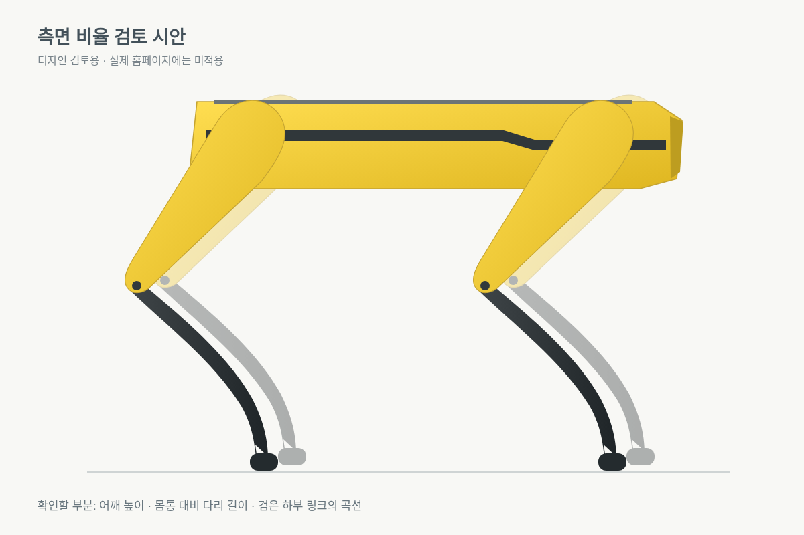

<!doctype html><html lang="ko"><meta charset="utf-8"><meta name="viewport" content="width=device-width,initial-scale=1"><title>로봇독 비율 검토 시안</title><style>*{box-sizing:border-box}body{margin:0;background:#f8f8f5;color:#43515a;font-family:system-ui,sans-serif}main{max-width:1200px;margin:auto;padding:16px}header{display:flex;flex-wrap:wrap;align-items:center;justify-content:space-between;gap:8px}h1{font-size:20px;margin:0}p{font-size:14px;color:#68767e;line-height:1.5}img{display:block;width:100%;height:auto}a{color:#456d86;padding:8px;border:1px solid #ccd5d7;border-radius:6px;text-decoration:none;display:inline-block;margin:2px}</style><main><header><h1>로봇독 비율 검토 시안</h1><nav><a href="robotdog-proportions.png" target="_blank">이미지만 열기</a><a href="robotdog-proportions.svg" download>SVG 다운로드</a></nav></header><p>비율을 확인하기 위한 단순 디자인 시안입니다. 실제 로봇 프로그램과 학습 데이터는 변경하지 않았습니다.</p></main></html>
